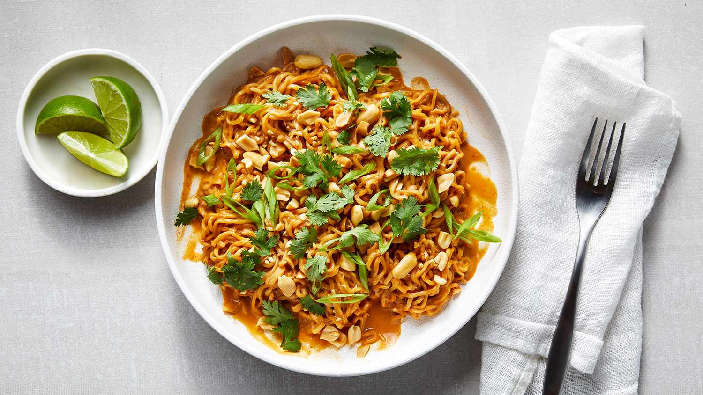

Thai Peanut Butter Ramen

Description
Here's a receipe for a delicious peanut butter ramen, quick and easy!
Ingredients
- 2 3oz packages of instant ramen noodles (discard soup packets)
- 1/4 cup creamy peanut butter
- 3 tablespoons light soy sauce
- 1 1/2 tablespoons honey
- 1 tablespoon sriracha
- 2 teaspoons sesame oil
- 2 green onions
- 2 tablespoons chopped peanuts
- 3 fresh lime wedges
Steps
- Cook ramen noodles in bowling water for 3-5 minutes.
- Add peanut butter, soy sauce, honey, sriracha, and sesame oil in large bowl and whisk until smooth.
- Drain ramen noodles and add them to peanut sauce mixture. Add 1/2 cup of pasta water to bowl.
- Garnish with green onions, peanuts, and lime wedges.
Home